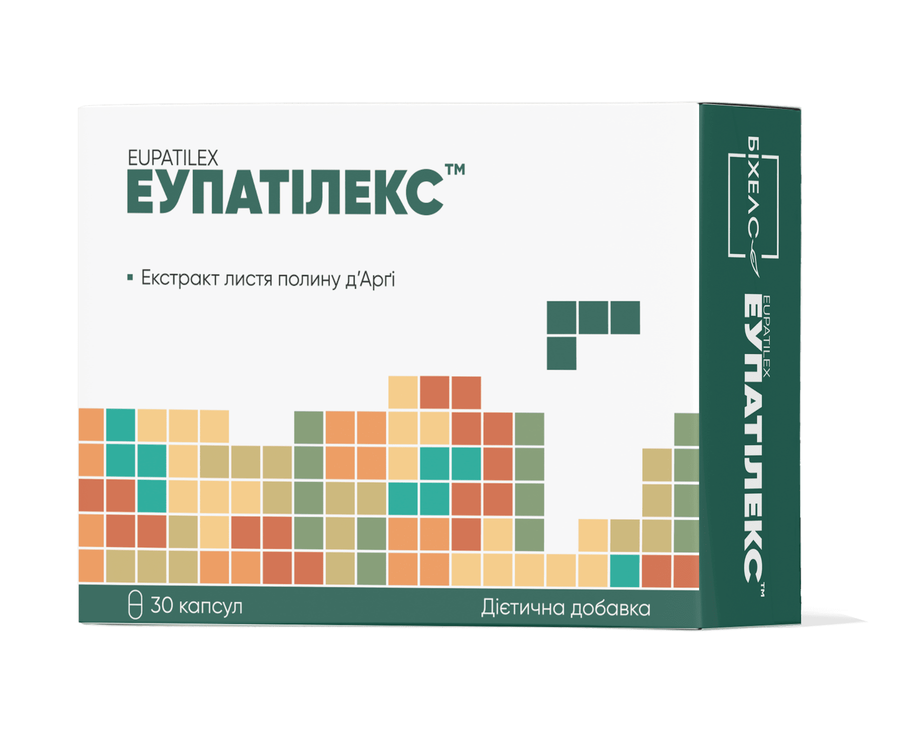

Еупатілекс

Еупатілекс (таблетки / капсули №30)
Дієтична добавка з подвійною гастропротекторною та гепатопротекторною дією
Оригінальний комбінований засіб на основі стандартизованих екстрактів полину по полинного та розторопші плямистої. Призначений для захисту та регенерації слизової оболонки шлунка, усунення диспепсичних розладів та підтримки функціонального стану печінки.
Склад та активні речовини
1 таблетка / капсула містить:
- Екстракт полину по полинного (Artemisia argyi) стандартизований — 60 мг (з вмістом еупатиліну — 1,2 мг, джасеозидину — 0,15 мг);
- Екстракт розторопші плямистої (Silybum marianum) стандартизований — 100 мг (з вмістом силімарину — 80 мг);
- Допоміжні речовини: наповнювачі, розпушувачі, антизлежувальні агенти.
Властивості компонентів
- Екстракт полину по полинного (Еупатилін, Джасеозидин): стимулює синтез ендогенних простагландинів та бікарбонатів, покращує мікроциркуляцію в стінках шлунка, прискорює заживлення ерозій та захищає слизову оболонку від агресивної дії соляної кислоти, НПЗЗ та алкоголю.
- Екстракт розторопші (Силімарин): потужний гепатопротектор та антиоксидант. Стабілізує мембрани гепатоцитів, нейтралізує вільні радикали, підтримує детоксикаційну функцію печінки та сприяє відновленню її клітин.
Рекомендації до застосування
- Гастропротекція при гострих і хронічних гастритах, ерозивних ураженнях шлунка та ДПК;
- Захист слизової оболонки шлунка при тривалому прийомі НПЗЗ та інших агресивних ліків;
- Профілактика та комплексне лікування токсичних, медикаментозних та алкогольних уражень печінки;
- Хронічні гепатити, дискінезія жовчовивідних шляхів та функціональні диспепсії.
Спосіб застосування та дози
Вживати дорослим по 1 таблетці / капсулі 3 рази на добу під час або одразу після прийому їжі, запиваючи достатньою кількістю питної води. Рекомендований курс прийому — від 2 до 4 тижнів (надалі тривалість узгоджується з лікарем).
Протипоказання
Підвищена індивідуальна чутливість до складових компонентів, вагітність та період лактації, обструкція жовчовивідних шляхів, дитячий вік.